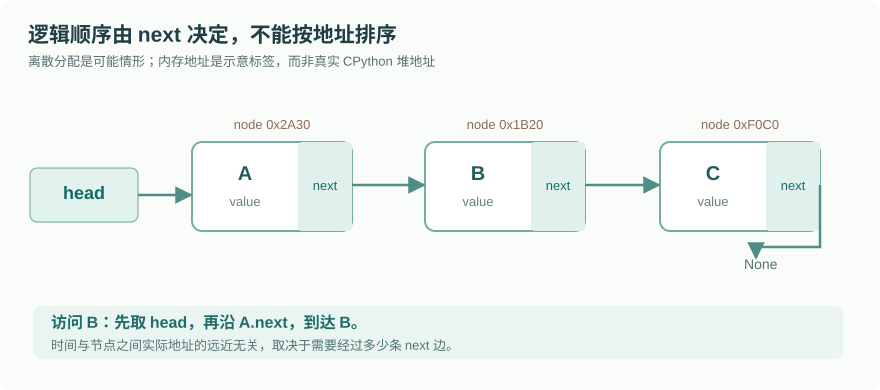
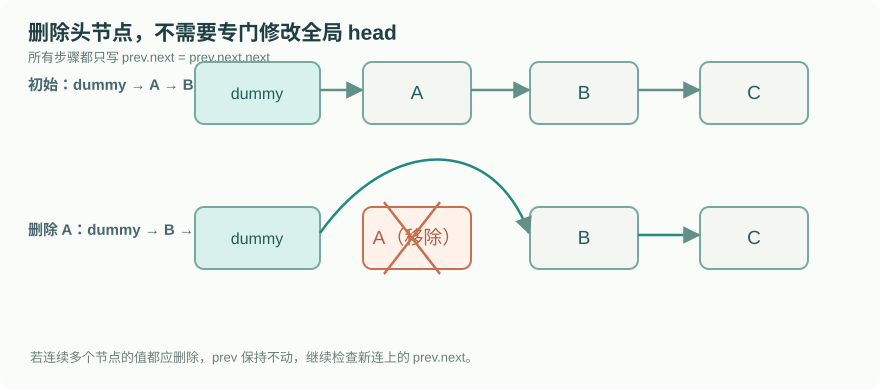
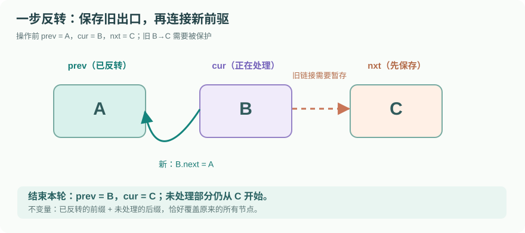

链表：用指针关系维护序列
在数组中移动元素是数据搬移；在链表中改变顺序是链接重接。学习如何画出每一步的 next、用哨兵统一边界、用不变量证明反转和判环。
从一次头部插入说起
假设有一个按到达顺序记录消息的序列。使用动态数组时，在最前面插入消息，往往要把旧元素依次向右移动；若用单链表，只要新节点的 next 指向旧头节点，再把头引用改成新节点，操作就结束了。
这里的“常数时间”有严格前提：已经持有头节点引用。如果只知道“第 100 个节点”的位置而未保存引用，就必须从头走过去，仍然需要线性时间。链表适合频繁做已定位位置附近的链接变更，不适合依赖整数下标随机访问。
链表不是连续数组：节点、引用与所有权
一个节点保存两类信息：value 是数据，next 是后继节点引用。序列 A → B → C → None 的逻辑顺序由引用决定，不由物理内存地址决定。最后一个节点的 next 是 None；空链表的头引用本身就是 None。

from dataclasses import dataclass
from typing import Optional
@dataclass
class Node:
value: int
next: Optional["Node"] = None
head = Node(10, Node(20, Node(30)))
assert head.next.next.value == 30单链表删除一个节点通常还需要前驱引用；双向链表在节点内再保存 prev，换来常数个引用修改的便利，但使用更多内存，也多了必须维护的一致性约束。
哨兵节点：把“删除头”变成普通删除
考虑移除链表中全部值等于目标 target 的节点。直接操作头引用时，需要额外分支处理连续多个头节点被删除的情况。添加一个不存储有效业务数据的 dummy 哨兵节点，让它的 next 指向原头；以后每次只检查 prev.next，处理逻辑完全统一。

def remove_value(head, target):
dummy = Node(0, head)
prev = dummy
while prev.next is not None:
if prev.next.value == target:
prev.next = prev.next.next
else:
prev = prev.next
return dummy.next
head = Node(2, Node(2, Node(5, Node(2))))
head = remove_value(head, 2)
assert head.value == 5 and head.next is None循环不变量：在 prev 之前已经处理过的节点都应保留，且链表中已经不存在需要删除的旧节点。命中删除条件时不移动 prev，因为新连上来的后继仍可能要删除。
反转链表：改变箭头的顺序，而不是搬动值
要把 A → B → C → None 反转为 C → B → A → None，遍历时同时维护 prev 和 cur。每次先缓存原 cur.next 为 nxt，再执行 cur.next = prev，最后一起推进两个指针。如果先改链接再读取原后继，就可能永远丢失尚未访问的节点。

def reverse_list(head):
prev = None
cur = head
while cur is not None:
nxt = cur.next # 先保留未处理链表的入口
cur.next = prev # 把当前节点并入反转前缀
prev = cur
cur = nxt
return prev
a = Node(1, Node(2, Node(3)))
rev = reverse_list(a)
assert (rev.value, rev.next.value, rev.next.next.value) == (3, 2, 1)
assert rev.next.next.next is None每轮结束时的不变量是：prev 指向已反转的前缀，cur 指向尚未处理的后缀；两个部分合起来恰好包含原始全部节点且没有丢失。遍历一次，共 O(n) 时间、O(1) 辅助空间。
逐步追踪三个指针
观察 A → B → C → None 在每次链接重接之后的状态。
快慢指针：为什么能检测环？
链表也可能不是以 None 结尾，而是某个节点重新指向之前的节点。用两个指针从头出发：slow 每轮走一步、fast 每轮走两步。若链表无环，fast 必然先到尾部；若有环，两指针进入环以后，它们的相对位置在有限长度的环上每轮相差一步，最终必然相遇。
def has_cycle(head):
slow = fast = head
while fast is not None and fast.next is not None:
slow = slow.next
fast = fast.next.next
if slow is fast:
return True
return False
x = Node(1, Node(2, Node(3)))
assert not has_cycle(x)
x.next.next.next = x.next
assert has_cycle(x)在含环链表里，若环外前缀长度为 μ，环长为 λ，入口可通过相遇后把一个指针重新放回头部，两指针改成每轮都走一步得到。推导来自：相遇时快指针比慢指针多走整圈的长度，2t−t=t=kλ，而慢指针在环内位置是 (t−μ) mod λ，因此从头走 μ 步与从相遇点走 μ 步会同时到入口。
双向链表与循环链表：多出的不变量
双向链表节点拥有 prev 和 next 两条引用。正常情况下，若 x.next is y，则还应有 y.prev is x。删除已知的内部节点时要同时更新前驱和后继的两个方向；忘改其中一侧，就会让正向遍历与反向遍历不一致。
循环链表把末节点的 next 连回首节点：遍历终止条件不再是 None，而是再次遇到约定的哨兵/头节点。如果没有清晰的终止条件，错误的遍历很容易成为死循环。生产实现通常借助专门的头尾哨兵降低这些边界风险。
| 结构 | 已持有节点时的局部改链 | 访问第 i 项 | 额外约束 |
|---|---|---|---|
| 单链表 | 已知前驱即可 O(1) 插删 | O(n) | 维护 next，边界为 None |
| 双向链表 | 已知节点时可 O(1) 删除 | O(n) | prev/next 双向一致 |
| 循环链表 | 取决于已知节点与前驱 | O(n) | 明确何处终止，防止无穷遍历 |
| 动态数组 | 尾部追加均摊 O(1)；中间 O(n) | O(1) | 容量与整体搬移 |
用边界情况检查“看起来正确”的指针代码
建议每次都按同一张清单验证：空链表、单节点、删除全部节点、重复值、删除头和尾、偶数长度与奇数长度、无环与有环。链表错误最常发生在“原本可达的节点因顺序不对而丢失”。
例如 reverse_list(None) 应返回 None；remove_value 当所有值都匹配时应返回 None。进行内存分析时还应知道：Python 节点对象带有实例开销，链表“仅改变指针很快”不等于实际遍历比连续数组快。
下一章的栈提供更严格的操作限制：只能从一端取放。了解链表的局部链接之后，就能看清“抽象接口”和“实现容器”的区别。
带走三个判断准则
- 链接修改只在已持有目标或前驱引用时为 O(1)；寻找那个位置仍可能 O(n)。
- 反转链表的核心是先保留 nxt，保持“已反转前缀 + 未处理后缀”不变量。
- 哨兵统一边界；双向链表维护两个方向；判环必须比较节点身份。
继续学习与校验资料
- MIT 6.006：Sequence Data Structures — 链表、动态数组的操作模型
- Python dataclasses — 节点示例中的 dataclass 语法
- 下一章：栈 — 从节点链接转向抽象存取规则